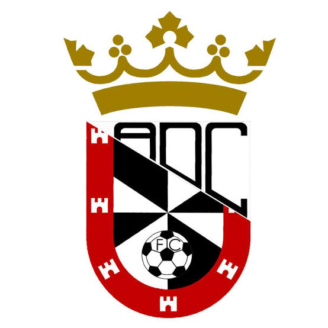
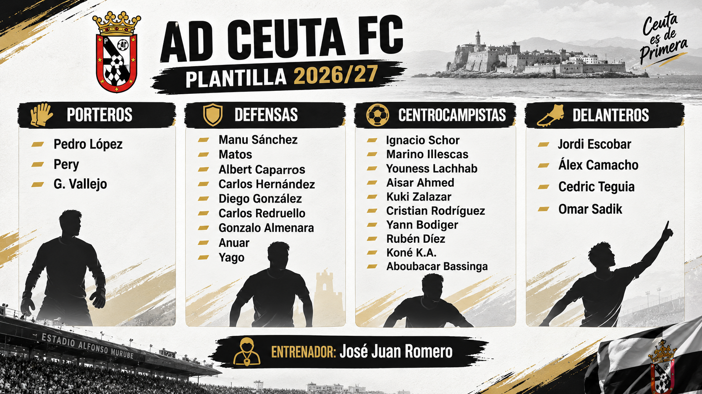

La Agrupación Deportiva Ceuta Fútbol Club o simplemente A. D. Ceuta F. C. es un club de fútbol español, de la ciudad autónoma de Ceuta. Fue fundado en 1956 con la denominación de Club Atlético de Ceuta por la fusión de la S. D. Ceuta y el C. Atlético de Tetuán. Compite en la Segunda División de España y disputa sus encuentros como local en el Municipal Alfonso Murube, con capacidad para 5500 espectadores.

La plantilla de la Agrupación Deportiva Ceuta está formada por un grupo de futbolistas que representan a la ciudad con esfuerzo, compromiso y pasión por el fútbol. Cada jugador aporta sus propias cualidades y habilidades al equipo, trabajando juntos para conseguir los mejores resultados posibles. Su objetivo es defender el escudo, competir al máximo nivel y hacer disfrutar a toda la afición caballa en cada partido.